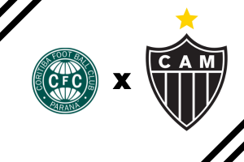
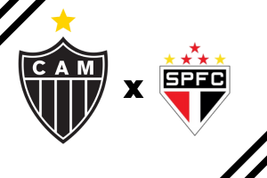

Campeonato Brasileiro 1971
19/12/1971

Botafogo 0 x 1 Atlético
(Triangular - jogo 2) Maracanã - Rio de Janeiro - Brasil
12/12/1971
Atlético 1 x 0 São Paulo
(Triangular - jogo 1) Mineirão - Belo Horizonte - Brasil
09/12/1971

Atlético 0 x 1 Internacional
(2° fase - 6° jogo) Mineirão - Belo Horizonte - Brasil
04/12/1971

Vasco 1 x 1 Atlético
(2° fase - 5° jogo) Maracanã - Rio de Janeiro - Brasil
01/12/1971
Atlético 2 x 0 Santos
(2° fase - 4° jogo) Mineirão - Belo Horizonte - Brasil
28/11/1971
Internacional 1 x 4 Atlético
(2° fase - 3° jogo) Beira Rio - Porto Alegre - Brasil
25/11/1971
Santos 2 x 1 Atlético
(2° fase - 2° jogo) Pacaembu - São Paulo - Brasil
21/11/1971
Atlético 2 x 1 Vasco
(2° fase - 1° jogo) Mineirão - Belo Horizonte - Brasil
14/11/1971
Atlético 0 x 0 Palmeiras
(19° rodada) Mineirão - Belo Horizonte - Brasil
06/11/1971
Vasco 0 x 0 Atlético
(18° rodada) Maracanã - Rio de Janeiro - Brasil
31/10/1971
Atlético 3 x 1 Internacional
(17° rodada) Mineirão - Belo Horizonte - Brasil
23/10/1971
Atlético 5 x 1 Portuguesa
(16° rodada) Mineirão - Belo Horizonte - Brasil
16/10/1971

Fluminense 2 x 0 Atlético
(15° rodada) Maracanã - Rio de Janeiro - Brasil
10/10/1971
Atlético 1 x 1 Cruzeiro
(14° rodada) Mineirão - Belo Horizonte - Brasil
03/10/1971
Coritiba 1 x 0 Atlético
(13° rodada) Couto Pereira - Curitiba - Brasil
25/09/1971
Atlético 2 x 2 Santa Cruz
(12° rodada) Mineirão - Belo Horizonte - Brasil
22/09/1971

Corinthians 0 x 0 Atlético
(11° rodada) Parque Antártica- São Paulo - Brasil
19/09/1971
Ceará 0 x 2 Atlético
(10° rodada) Presidente Vargas - Fortaleza - Brasil
12/09/1971

Atlético 2 x 2 Botafogo
(9° rodada) Mineirão - Belo Horizonte - Brasil
08/09/1971
América-RJ 2 x 0 Atlético
(8° rodada) Maracanã - Rio de Janeiro - Brasil
05/09/1971
Atlético 2 x 1 Santos
(7° rodada) Mineirão - Belo Horizonte - Brasil
01/09/1971
Atlético 2 x 0 São Paulo
(6° rodada) Mineirão - Belo Horizonte - Brasil
28/08/1971
Sport 1 x 1 Atlético
(5° rodada) Ilha do Retiro - Recife - Brasil
25/08/1971
Atlético 4 x 0 Bahia
(4° rodada) Mineirão - Belo Horizonte - Brasil
21/08/1971
Flamengo 0 x 1 Atlético
(3° rodada) Maracanã - Rio de Janeiro - Brasil
15/08/1971